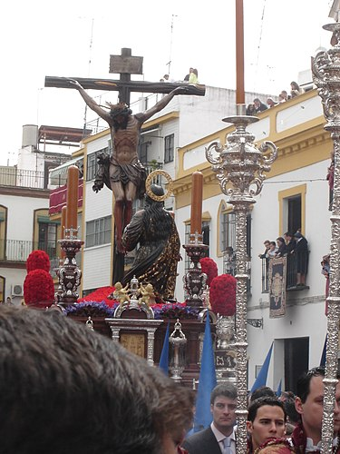
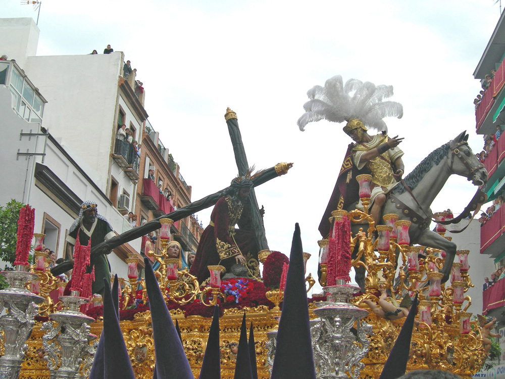
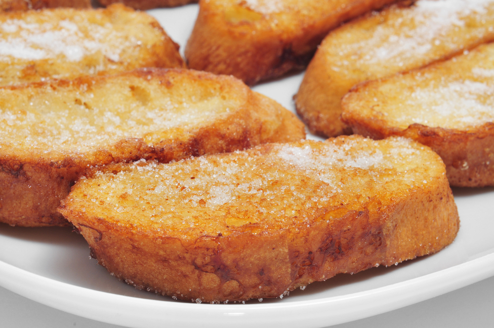

La Semana Santa es la fiesta grande de Sevilla. Una celebración que alcanza una intensidad, tanto estética como espiritual, única en su estilo. Declarada Fiesta de interés turístico Internacional. Entre el Domingo de Ramos y el de Resurrección salen a la calle cerca de sesenta cofradías que dan vida a la pasión y muerte de Cristo. Es de gran tradición que a las distintas cofradías, en diferentes partes del recorrido, se les cante un palo del flamenco llamado saeta.


Entre los dulces de Semana Santa sevillana más destacados, encontramos las torrijas, los pestiños, las yemas y las empanadillas de cabello de ángel. Estos postres son una muestra de la rica tradición repostera de la ciudad y son elaborados con ingredientes típicos de la zona, como la miel, el aceite de oliva, el vino o la canela.
| Raquel | Javi | Antonio | Cynthia | |
| País | Colombia | España | España | España |
| Edad | 17 | 17 | 17 | 17 |
| Torrijas | Sí | Sí | No | No |